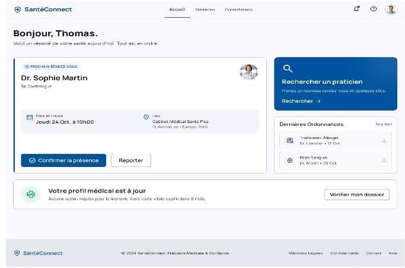

HTMLCSSReactJavaScriptBootstrap
SantéConnect – cabinet médical
Application web (projet scolaire) pour accélérer la prise en charge et la gestion des patients. Trois espaces : patient, administrateur et corps médical. Un chatbot accueille le patient, le conseille ou le redirige vers un médecin pour un rendez-vous ou une prescription. Les médecins disposent d’un agenda et d’un planning.
Rôle : concepteur front-end · équipe de 6